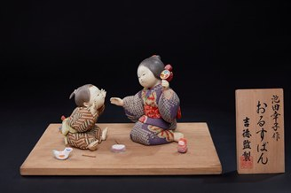

Orusuban (Ở nhà) là một tác phẩm thuộc dòng 創作人形 (Sōsaku Ningyō) – búp bê nghệ thuật hiện đại do các nghệ nhân sáng tác. Khác với những búp bê tái hiện nhân vật lịch sử hay sân khấu Kabuki, dòng búp bê này hướng đến việc khắc họa những câu chuyện bình dị trong cuộc sống thường ngày.
Trong tiếng Nhật, Orusuban có nghĩa là ở nhà trông nhà hoặc ở nhà một mình khi cha mẹ đi vắng. Đây là hình ảnh quen thuộc trong nhiều gia đình Nhật Bản, khi những đứa trẻ ngoan ngoãn ở nhà, cùng chơi đùa hoặc chăm sóc lẫn nhau trong lúc chờ người lớn trở về.
Tác phẩm tái hiện hai em nhỏ trong bộ kimono giản dị đang ngồi đối diện nhau với những món đồ chơi truyền thống. Những biểu cảm hồn nhiên, ánh mắt chăm chú và cử chỉ tự nhiên được thể hiện rất tinh tế, mang lại cảm giác gần gũi, ấm áp và gợi nhớ về tuổi thơ.
Không chỉ thể hiện kỹ thuật chế tác búp bê tinh xảo, Orusuban còn truyền tải những giá trị văn hóa sâu sắc của người Nhật như tình cảm gia đình, sự quan tâm giữa anh chị em, tính tự lập của trẻ nhỏ và sự trân trọng những khoảnh khắc đời thường. Chính những điều bình dị ấy đã tạo nên sức sống và giá trị nghệ thuật lâu bền của dòng Sōsaku Ningyō.
おるすばんは、作家が創作する現代の美術人形である創作人形の作品です。歴史上の人物や歌舞伎の舞台を再現する人形とは異なり、このジャンルは日常のささやかな物語を描くことを目指しています。
日本語の「おるすばん（お留守番）」は、親が出かけている間、家に残って家を守ることを意味します。子どもたちがいい子に家で待ち、一緒に遊んだり、互いに面倒を見合ったりしながら大人の帰りを待つ姿は、多くの日本の家庭でおなじみの光景です。
本作は、素朴な着物姿の二人の幼い子どもが、伝統的なおもちゃを前に向かい合って座る姿を表しています。無邪気な表情、夢中なまなざし、自然なしぐさが繊細に表現され、親しみやすく温かな、子ども時代を思い起こさせる作品となっています。
おるすばんは精巧な人形制作の技を示すだけでなく、家族の愛情、きょうだいの思いやり、子どもの自立心、そして日常の瞬間を大切にする心といった、日本人の深い文化的価値を伝えています。こうした素朴さこそが、創作人形の生命力と色あせない芸術的価値を生み出しているのです。